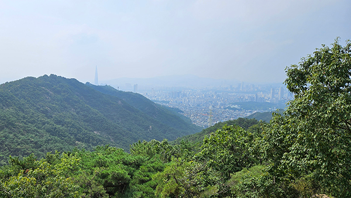
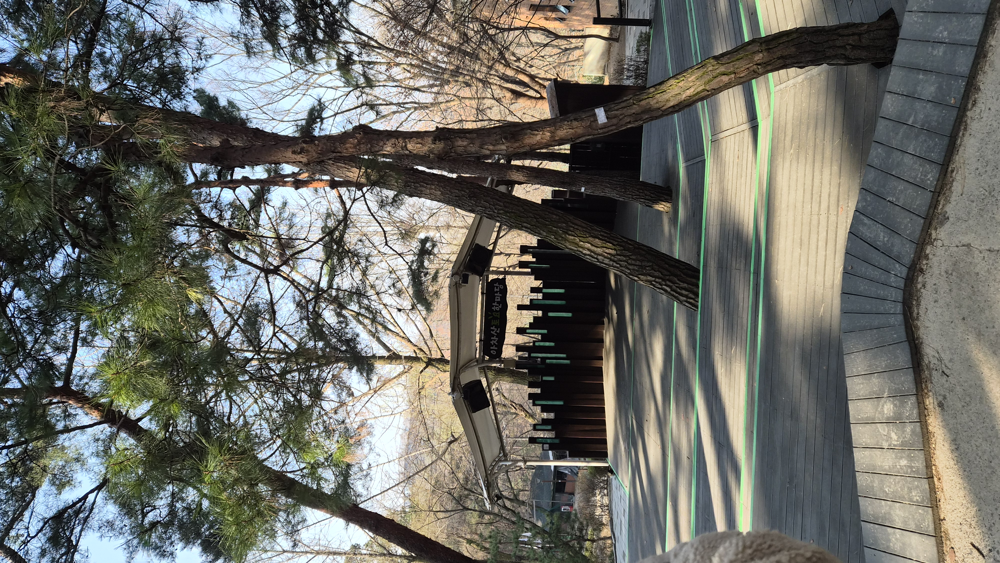
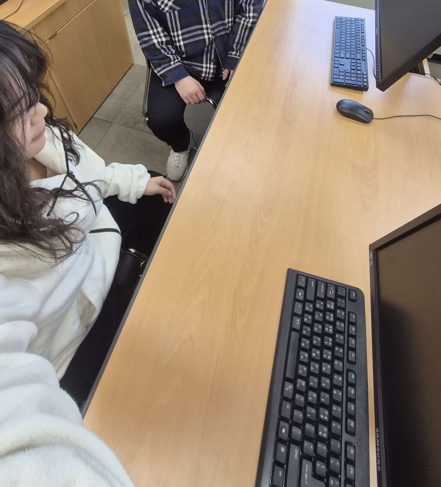
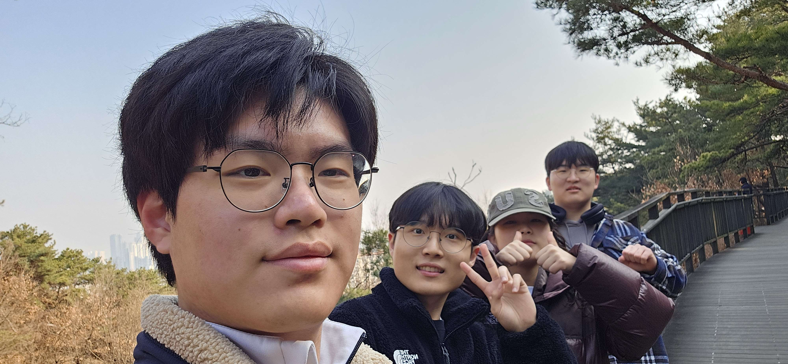
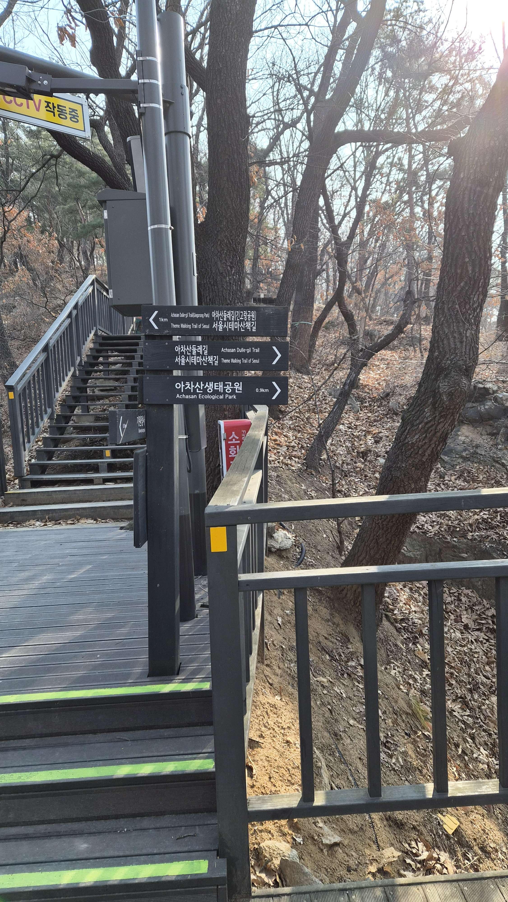
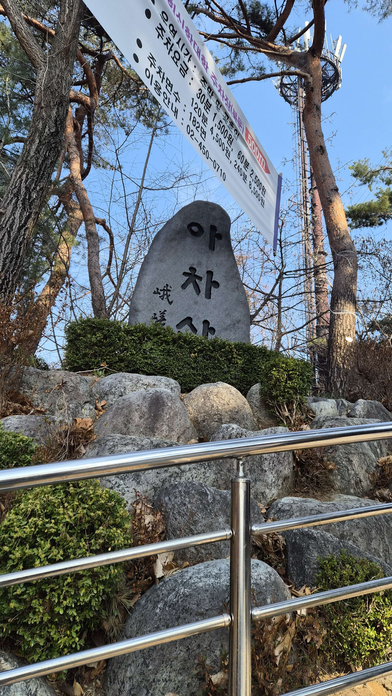

It's Me
이름: 장혁
학번: 202312372
학과: 컴퓨터공학부 2학년
좌우명: 도파민을 찾아서..


이름: 장혁
학번: 202312372
학과: 컴퓨터공학부 2학년
좌우명: 도파민을 찾아서..

이름: 조은서
25학번 2학년
06년생 컴퓨터공학과 2학년 조은서입니다!
사실 다 잘먹긴하는데 에어프라이기에 돌린 소금빵이 요즘 너무 좋은거 같네요 ㅎㅎ
절대 못먹는 음식 같은건 없고, 웬만하면 다 잘 먹습니다!
12시 이후 새벽시간이 가장 좋은거같아요!
집중도 잘되고 조용해서 여러 잡생각할때도 있고 여튼 좋습니다!
롤체..에 최근에 너무 깊게 빠졌다가 이러면 안될거같아서 어제 삭제했습니다..
문화생활을 즐겨하진 않는데 진격의거인은 정말 재밌게 봤습니다!
처음볼때보다 유튜브로 숨은의미 찾아볼때가 더 재밌었던거 같네요..ㅎㅎ
어지간한 상황에서는 일회성감정으로 끝나지만, 좀 길어질때는 상황을 좀 분석하고 이해하려고 합니다.
이해가되면 보통 해결되더라고요.. 이해가 안되면...지피티한테 물어봅니다..
엄... 뭐 닮은거는 모르겠고 고래처럼 유유자적하면서 사는게 꿈입니다 ㅎㅎ
아직 제 목표나 하고싶은게 없어서 컴공기술을 가지고 있으면 나중에 목표가 생겼을때 뭐든 구현할수있겠다 해서
선택했슴니당 그외에도 게임을 좋아해서 친숙했던거같네용
수학..? 전 수학으로 컴공왔다고 생각했는데 그냥 문제푸는거 자체를 좋아한거지
수학은 제분야가 아니라는걸 최근에 깨달았습닏..
다양한 활동해서 다양한 사람 만난거? 동아리, 국토대장정, 필리핀 선교, 학교프로그램 등등..
컴공이아닌 다른 분야 분들을 만나서 친해진게 제 식견을 넓히는데 도움이 된거같네요
당장 졸업 후는 모르겠지만 그래도 제 개인 프로젝트를 크게 해보고 싶습니담
새로운 사람 볼때는 좀 숨겨진 면모를 보는거같아요!
겉보기나 행동과는 좀 다른 생각이나 행동? 겉으로는 판단하지 않으려고 합니다
갈등을 이해하려고 최대한 애를쓰고요... 사실 제 바운더리에 없으면 구지 이런 노력도 안하는데,
있는 사람들이면 최대한 이해하고 분석해서 감정을 전달하려고 합니다
아무래도 가족이죠 ㅎㅎ 알게모르게 저에게 좋은 영향을 주고 좋은사람으로 자란거 같아서 감사합니당
지금은 저를 가장 소중하게 생각하고 있습니다... 그래서 잘 사는게 뭔지에 대해 연구하는걸 좋아합니다
intp이고 뭐 어느정도 맞다고 생각합니다! 사회성박살이라는 이미지가 있는데 전 그정도는 아니라고 정정하고 싶네요 ㅎㅎ
장점은 항상 이성적으로 접근하려 한다는거고, 단점은 감성에 집중하지 못해서 특별하게 좋아하는게 없는거?
5천만원은 투자하고, 5천만원은 하고싶었던 경험이나 프로젝트 맘껏하고싶네요!!
생각보다 모든 성취나 실패가 운적인 요소때문이라고 생각해서 성취해도 자만하지 않고,
실패해도 슬퍼하지 않는거를 목표로 살고있슴니당
뭐 직업이든 뭐든 아무것도 상상이 안되는데 그럼에도 하고싶은거 하면서 행복하게 살고 있을듯 합니다 ^^
선정 이유: 사람과 역사를 잇는 길, 편안한 트래킹 코스와 난이도에 비해 뛰어난 경치, 다양한 볼거리, 접근성까지 모두 갖춘 코스이기 때문에 선정하였습니다.
📏 거리: 4.6km
⏰ 소요시간: 약 2시간 10분
⭐ 난이도: 중급 (서울둘레길 홈페이지 기준 ★★☆☆☆)



산책 후기: 운동을 하지 않아서 그런지 가벼운 산을 오르는데도 꽤나 힘이 많이 들었지만, 아침부터 사람들과 함께 등산과 산책과 이런저런 잡담을 즐기니 상쾌한 기분이었습니다. 건강을 위해서든 이러한 소소한 즐거움을 위해서든 시간을 내서 한 번씩 산책로를 탐색, 탐방하면 좋을 것 같습니다.